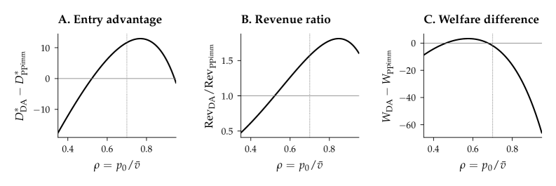

A Lean 4 formalization audits the algebraic and order-theoretic content of the market model.
Abstract
On platforms where time-to-contract is itself payoff-relevant--Aalsmeer's flower auctions, ride-hailing dispatch, on-demand-labor matching--the textbook revenue equivalence between Dutch and first-price formats holds the trading outcome fixed. Once participation is endogenous and both sides bear waiting costs, the trading format directly shapes who enters, market thickness, volume, and platform revenue. The platform's ranking of the descending clock against immediate and batched posted-price benchmarks is decided by two estimable primitives on each side of the market: an earnings gap and a timing gap. A bidirectional four-case classification identifies when the descending clock dominates at every level of waiting costs, only above a floor, only below a ceiling, or not at all; the last case is unconditional -- when the descending clock charges no more per trade and contracts no faster than the posted-price benchmark, it cannot win. No format admits a universal ranking. The local verdict propagates through endogenous entry, and cross-side complementarity amplifies shared local advantages into joint dominance. A conditional revenue theorem converts entry and volume gains into a platform-revenue ranking. In calibrated parameterizations the revenue-ranking switching boundary lies near $p_0/\bar v\approx 1$, inside the empirical range for ride-hailing platforms. A measurement protocol provides explicit nonparametric estimators for the six reduced-form objects and a test statistic for the dominance condition, and a Lean~4 formalization audits the algebraic and order-theoretic content. In markets where goods or services cannot wait, the speed of the trading mechanism is a primitive of market design.
Problem
On platforms where time-to-contract is payoff-relevant (flower auctions, ride-hailing, on-demand labor), standard revenue equivalence breaks down once participation is endogenous and both sides bear waiting costs. Which trading format a platform should choose depends on primitives that have not been formally characterized.
Approach
The paper models descending-clock (Dutch) vs. posted-price mechanisms with endogenous two-sided entry and waiting costs. A four-case classification determines when the Dutch clock dominates, based on an earnings gap and a timing gap on each market side. Cross-side complementarity propagates local advantages into joint dominance. A conditional revenue theorem converts entry/volume gains into a revenue ranking. A Lean 4 formalization audits the algebraic and order-theoretic content of the main results.
Results
In calibrated parameterizations for ride-hailing, the revenue-ranking switching boundary lies near p0/v_bar ~ 1, inside empirically relevant ranges. The paper provides nonparametric estimators for six reduced-form objects and a dominance test statistic. No format admits a universal ranking.

Figure 6: Equilibrium outcomes as a function of the starting-price ratio p_{0}/\bar{v} . Panels show driver-entry advantage, revenue ratio, and welfare difference; the dashed line marks the baseline p_{0}/\bar{v}=0.7 . Entry and revenue favour Dutch over a wide range, while welfare can fall when higher rider prices offset volume and timing gains.